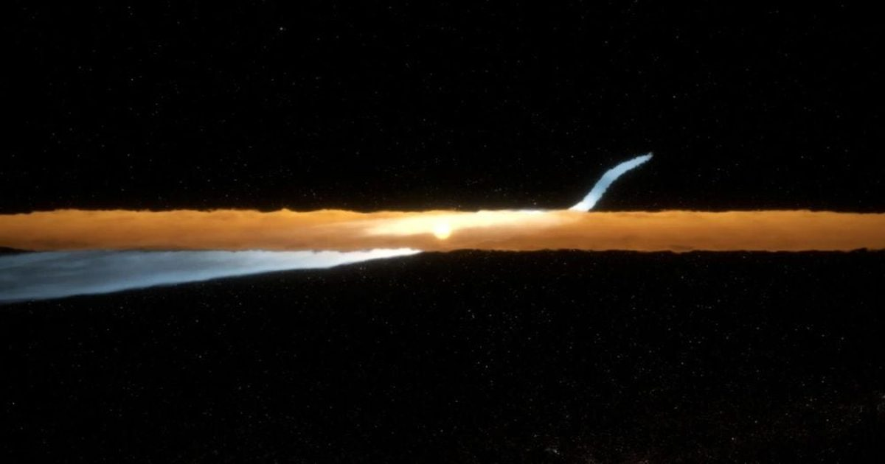

Столкновение карликовых планет создало «кошачий хвост» длиной в 1000 астрономических единиц
Система Бета Живописца находится всего в 63 световых годах от нас.
Ему всего около 23 миллионов лет, это своего рода аналог нашей Солнечной системы, когда она была намного моложе.
Наблюдения показывают удлиненную пылевую особенность под названием «Кошачий хвост», которая озадачила исследователей.
Новое исследование говорит, что это результат столкновения двух карликовых планет, что наверняка произошло в нашей Солнечной системе, когда она была молодой.